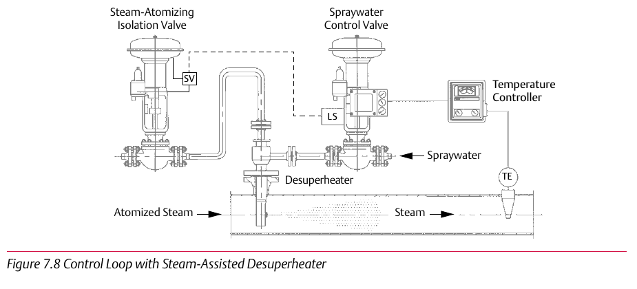

Steam-Atomized Desuperheater Design


Steam-atomized designs use high-pressure steam (≥2x main steam pressure) to atomize spraywater, extending both rangeability (50:1) and the minimum usable steam velocity (down to ~10 ft/s) — the highest-performing design, at the cost of needing a separate atomizing-steam supply and isolation valve. Component Index: cvh-cmp-steam-atomized-desuperheater-design, cvh-cmp-steam-assisted-desuperheater-control-loop.